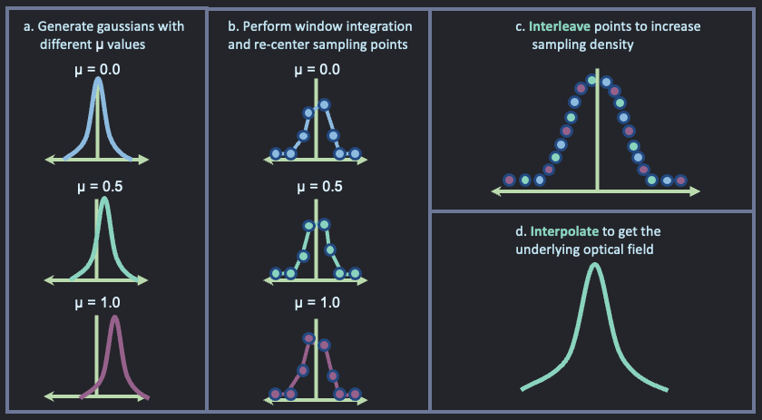

Interleaving algorithm
1 Problem statement - interleaving algorithm
The sampled optical field on the line detector was previously simulated in notebook: Optical field simulation.
Some of the observations were:
There are 32 sampling points as the line detector has the same number of pixels. This was simulated using a window integration over a defined optical field defined by: \(y = e^{-((x-\mu)/\sigma)^n}\).
The parameters \(\mu\) and \(\sigma\) determine the lateral shift and widht of the gaussian function respectively. These parameters are related to the incoming light angle from the sample and the material roughness.
The \(\mu\) parameter was swept to simulate different incoming light angles. With this data, a histogram was then reconstructed and its standard deviation value was calculated.
An oscillating pattern was observed in the histogram’s standard deviation (Aq parameter). This is not ideal as this indicated a roughness change, however only the angle of the incoming light was being swept.
Hence, a new parameter that is constant as a function of \(\mu\) has to be found.
It is proposed to implement an interleaving algorithm to increase the density of sampling points as shown in Figure 1

- Generate gaussians with different \(\mu\) values. b. Calculate a window integration and re-center sampling points. c. Interleave points to increase sampling density. d. Interpolate to get the underlying optical field.